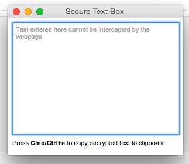

Interfaces
Dropdown (upper right corner)
**NOTE: The planned 'messages' tab has been moved from this interface to the Pop-up Window (described below) after it was dicovered that the dropdown cannot be triggred by a keyboard shortcut**
- This interface will be a dropdown menu that is displayed by clicking the grd me icon in the upper right corner of the browser. It will present a tabbed view will have a tab for (1) Group/Contact Management, (2) Settings.
- Current Implementation:
- Sketches of new tab structure:
Pop-up Window (Protected Textbox)
**NOTE: This interface component has been added after it was dicovered that the dropdown cannot be triggred by a keyboard shortcut**
- This window will be displayed by the keyboard shortcut [ctrl]/[cmd]+e
- Its primary purpose is to protect the clear text message from sites that capture partially written messages (Facebook)
- Its secondary purpose is to allow the user to select which group of contacts he/she is communicating with. This selection will occur with a list of contact groups below the textbox, with the previously used group being preselected.
- Once the message is typed, [ctrl]/[cmd]+e or clicking a button will copy the encrypted message to the user's clipboard and close the window.
- The interface will remain similar to the current implementation (see image below), but with the addition of the group selection and "encrypt" button elements below the textbox.
- Starting State:

- Sketch of planned apearance: *note, this sketch was drawn as an interface that was part of the dropdown menu. The contents of this interface will remain the same, but will be relocated to this pup up.
Keyboard Shortcuts
- The user will primarily use keyboard shortcuts to interact with grd me durring regular use (sending encrypted messages)
- [ctrl]/[cmd]+e will display the dropdown menu displaying the "Message" tab
Automatic Text Replacement
- Grd Me replaces encrypted messages (identified by an opening and closing tag) on a page with clear text automaticly.
- Decrypted clear text will be accompaied by the Grd Me lock logo and will appear buld when you hover over the lock.
- Clear text will be inserted back into the page in its own iframe so that the webiste cannot access the decrypted message
- This process will require no action from the user
Automatic Key Detection
- Grd Me will detect Grd Me keys on a page automaticly.
- Just as it displays a lock icon next to decrypted text, it will display an icon next to a found key.
- Clicking this icon will import the key into your key/contact list
- Adding keys WILL NOT happen automaticly
Settings Panel
- This will be accessed through the browser's extension management window (i.e. browser > extensions > Grd Me > options)
- It will contain more advanced options, such as importing/exporting a database of recieved messages.
{kind=link}
{kind=link}